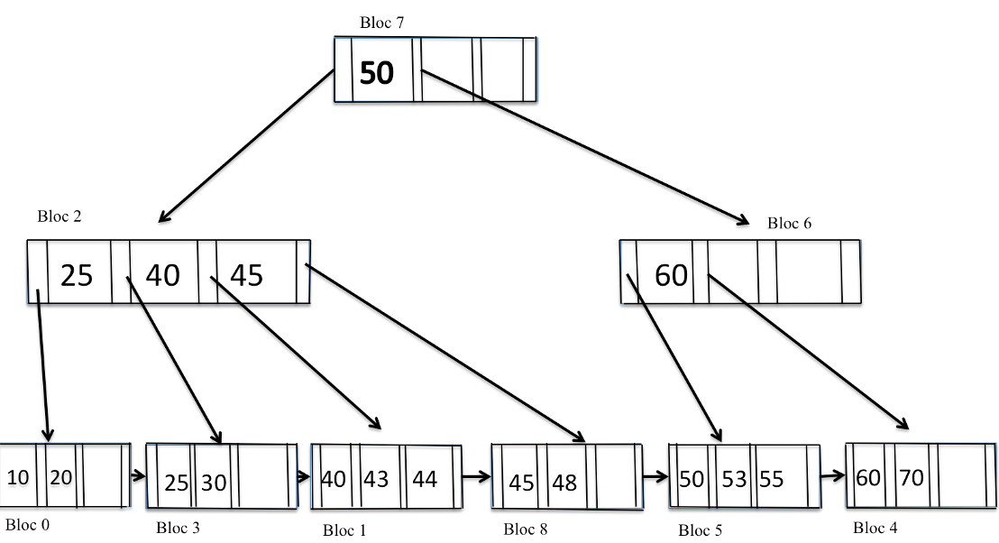

Objective: The learning outcomes of this lab are as follows:
Consider a disk with the following characteristics (these are not parameters
of any particular disk unit):
Answer the following questions:
a. What is the total capacity of a track, and what is its useful capacity (excluding interblock gaps)?
b. How many cylinders are there?
c. What are the total capacity and the useful capacity of a cylinder?
d. What are the total capacity and the useful capacity of a disk pack?
e. Given that the disk drive rotates the disk pack at a speed of 2,400 rpm (revolutions per minute), calculate the transfer rate (tr) in bytes/msec and the block transfer time (btt) in msec. Also, determine the average rotational delay (rd) in msec and the bulk transfer rate. (Refer to Appendix B.)
f. Assuming the average seek time is 30 msec, how much time does it take (on average) in msec to locate and transfer a single block, given its block address?
g. Calculate the average time it would take to transfer 20 random blocks, and compare this with the time it would take to transfer 20 consecutive blocks using double buffering to save seek time and rotational delay.
Draw the result of each of the following operations on the B+ tree provided:

a) Insert 23
b) Insert 65
c) Insert 52
d) Insert 42
e) Remove 44
f) Remove 40
g) Remove 70
h) Remove 60
i) Remove 60 and 70
Consider the following Hotel schema:
where:
Perform the following:
SELECT r.roomNo, r.type, r.price
FROM Room r, Booking b, Hotel h
WHERE r.roomNo = b.roomNo AND b.hotelNo = h.hotelNo AND
h.hotelName = 'Grosvenor Hotel' AND r.price > 100;
Given the locking information for several transactions in the following table, perform the following:
| Transaction | Data items locked by transaction | Data items transaction is waiting for |
|---|---|---|
| T1 | X2 | X1 |
| T2 | X3, X10 | X7, X8 |
| T3 | X8 | X4 |
| T4 | X7 | X1 |
| T5 | X1, X5 | X3 |
| T6 | X4, X9 | X6 |
| T7 | X6 | X5 |